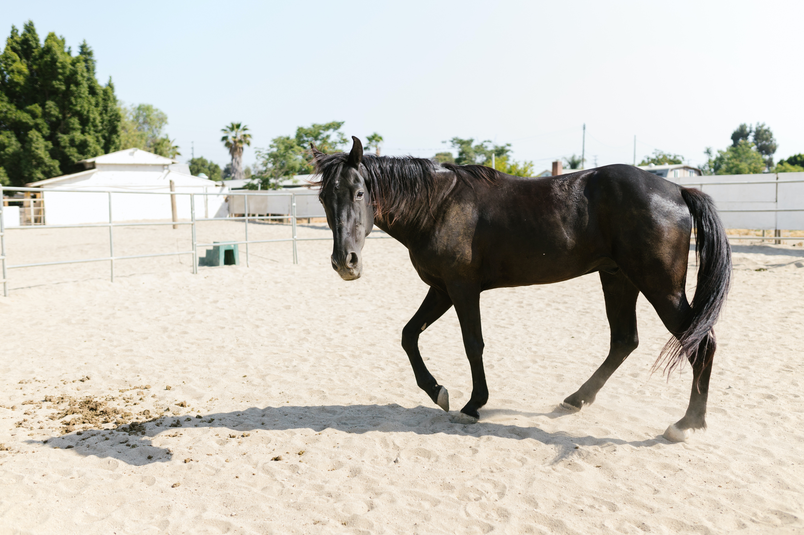
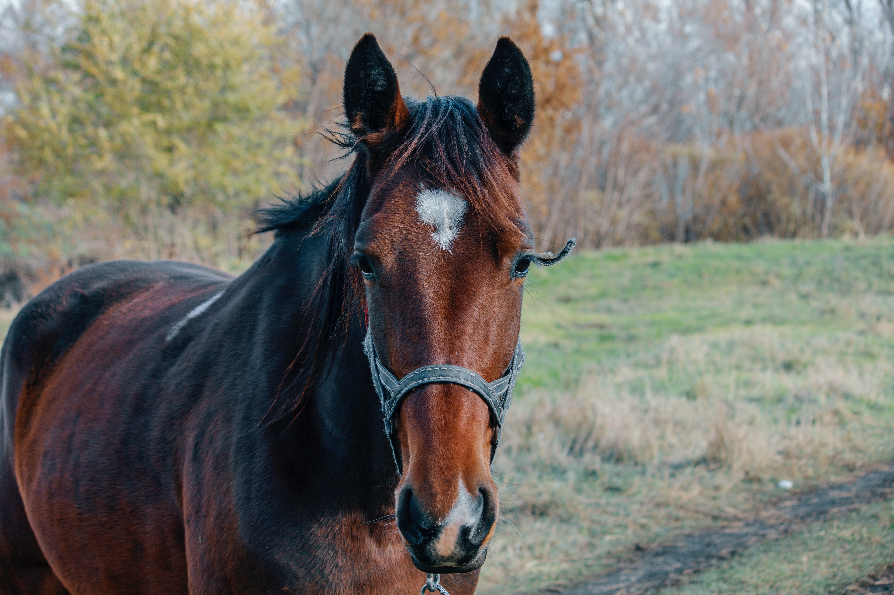

Oscar es muy cariñoso, mimosón y un poco mandón, le encanta que le acaricien y jugar, muy sociable pero preferiría ser hijo único ya que le gusta acaparar las atenciones de los humanos.

Me llamo Rudolf igual que el reno de Papa Noel, me encantan los gorros y bufandas, tambien soy muy rápido por lo que deberas agarrate fuerte ya que puede que echemos a volar.

Os presentamos a la jefa, Dama. Ella quiere ser la reina y así tener todo el cariño y los mimos para ella sola. Le gusta que todo esté en orden y un buen paseo matutino.